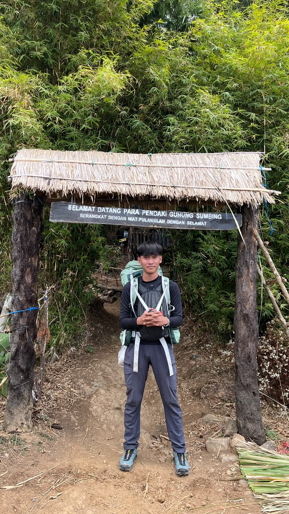

Siswa Kelas XII TKJ | Computer & Network Technician - SMK 3 Perguruan Cikini
"Saya menguasai beberapa hal dalam bidang Teknik Komputer dan Jaringan (TKJ) yang telah dipelajari selama di SMK kelas XII. Saya memahami cara merakit, merawat, dan memperbaiki komputer, menginstal sistem operasi Windows dan Linux, serta menginstal aplikasi yang dibutuhkan. Selain itu, saya juga mempelajari cara membuat kabel jaringan UTP dengan konektor RJ45, mengatur IP Address, melakukan konfigurasi jaringan LAN dan WLAN, serta menghubungkan komputer ke jaringan internet. Saya juga memahami dasar-dasar konfigurasi router dan switch MikroTik, pengaturan access point, administrasi server, dan keamanan jaringan. Selain itu, saya mampu melakukan troubleshooting sederhana untuk mengatasi masalah pada komputer maupun jaringan. Dengan pengetahuan tersebut, saya dapat melakukan instalasi, konfigurasi, dan perawatan komputer serta jaringan sesuai dengan ilmu yang telah dipelajari selama di sekolah."
Jurusan Teknik Komputer dan Jaringan (TKJ)
Aktif mendalami keahlian praktis dan teoretis di bidang infrastruktur jaringan komputer, sistem operasi, perakitan perangkat keras, serta troubleshooting sistem secara mendalam.
Merakit komponen PC, pemeliharaan preventif, pembersihan berkala, serta identifikasi dan penggantian perangkat keras yang rusak.
Instalasi sistem operasi Windows dan berbagai distribusi Linux, konfigurasi driver, serta instalasi perangkat lunak pendukung.
Keterampilan crimping kabel UTP tipe Straight dan Cross, serta perencanaan dan pengaturan IPv4/IPv6 secara presisi.
Membangun jaringan Lokal (LAN), nirkabel (WLAN), serta konfigurasi access point untuk distribusi sinyal yang optimal.
Konfigurasi dasar router dan switch MikroTik, pengaturan DHCP, NAT, firewall rules, dan manajemen bandwidth jaringan.
Pengelolaan dasar layanan server, pengaturan hak akses, serta implementasi lapisan pengamanan untuk mencegah ancaman siber.
Kemampuan analitis untuk mendiagnosis dan memperbaiki kendala pada perangkat keras, perangkat lunak, maupun koneksi jaringan yang bermasalah.
Tertarik berdiskusi seputar jaringan komputer, kolaborasi proyek, atau hal lainnya? Jangan ragu untuk menghubungi saya melalui kontak di bawah ini.